Lab 6-2: Blowing snow - snow redistribution on the landscape scale#
Created by Eli Schwat - February 2025
import rioxarray as rix
import matplotlib.pyplot as plt
import geopandas as gpd
import numpy as np
from shapely.geometry import Point
Open datasets#
Earth DEM#
A digital elevation model (DEM) is aa gridded dataset with one elevation value for each pixel. This can best be understood by looking at one. Below, we open up the elevation dataset, along with a “hillshade dataset”. A hillshade is calculated from a DEM, and essentially mimics shadows to make it easier to understand the topography.
Snow DSM#
Snow DSM A “DSM” is a digital surface model. The idea is the same as the DEM, except now the pixel values will represent some surface instead of the terrain. For example, a snow dsm has a snow depth value for each pixel. Let’s plot the snow DSM over the hillshade. Note that this snow DSM was created from data collected on 1 April 2023, so near the date of maximum snow depth during the winter of the SOS campaign.
# This is the DEM file
elevation = rix.open_rasterio("../data/east_river_elevation.tif")
# This is the hillshade file
hillshade = rix.open_rasterio("../data/east_river_hillshade.tif", masked=True)
# This is the snow depth file
snowdepth = rix.open_rasterio("../data/eastriver_snowdepth_2023april01.tif")
Let’s look at the elevation dataset
elevation.plot(cbar_kwargs={'label': "Elevation (m)"})
plt.gca().set_aspect('equal') # so that the axes are sized correctly
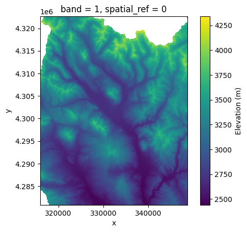
Now let’s look at the hillshade
hillshade.plot(cmap='Greys_r', add_colorbar=False)
plt.gca().set_aspect('equal') # so that the axes are sized correctly
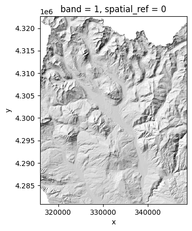
We can plot them together. We will plot the hillshade on the bottom, and make the elevation colors see through
hillshade.plot(cmap='Greys_r', add_colorbar=False)
ax = elevation.plot(alpha=0.5, cbar_kwargs={'label': "Elevation (m)"})
plt.gca().set_aspect('equal') # so that the axes are sized correctly
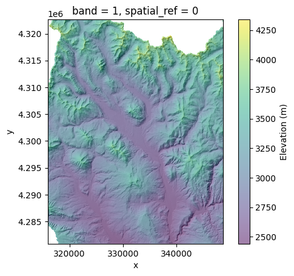
Now let’s look at the snowdepth raster on the hillshade.
hillshade.plot(cmap='Greys_r', add_colorbar=False)
ax = snowdepth.plot(alpha=0.5, cbar_kwargs={'label': "Snow depth (m)"})
plt.gca().set_aspect('equal') # so that the axes are sized correctly
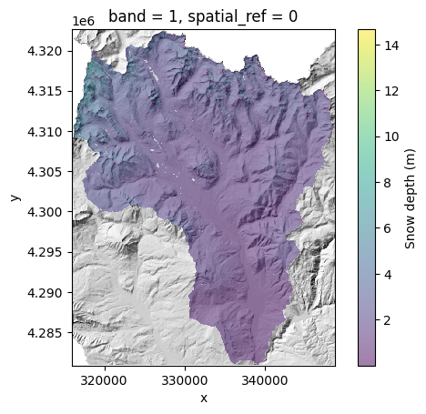
This doesn’t look that great… it looks like all the snowdepth values are below 4 meters. Let’s look at the distribution of snow depth values
snowdepth.plot.hist(bins=50)
plt.xlabel('Snow depth (m)')
plt.ylabel('Count of pixels')
plt.show()
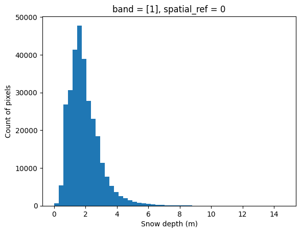
OK so if we shrink the colorbar, we should see more detail. Let’s make our maximum plotted snow depth value 4m. Let’s also change the color bar to blues so that shallow snow is white-ish, deep snow is deep blue.
hillshade.squeeze().plot(cmap='Greys_r', add_colorbar=False)
ax = snowdepth.squeeze().plot(cmap='Blues', alpha=0.75, vmax=4, cbar_kwargs={'label': "Snow depth (m)"})
plt.gca().set_aspect('equal') # so that the axes are sized correctly
OK so what we see makes sense - higher elevation areas have more snow. Also, it appears that more snow fall in the northern portion of our domain, particularly in the NE corner.
Where is Kettle Ponds (our measurement site) on this map? And if this snowdepth map is for the whole East River Valley, what comprises the Upper East River Valley?
Let’s open up a boundary for the Upper East River Valley and create a “GeoSeries” with the lat/long of the Kettle Ponds site, and plot both on top of the map above. We used these mapping features in Lab2-1.
upper_east_river_polygon = gpd.read_file('../data/east_polygon.json').to_crs(
snowdepth.rio.crs
)
# Create a dataseries for the two locations of the snotels.
# We also add in the location of Kettle Ponds manually
# Note we give it a "CRS" coordinate reference system which corresponds to the Latitude Longitude points provided in the dataframe above
# This is the location of Kettle Ponds
kps_loc = gpd.GeoSeries([Point(-106.972983, 38.941817, 0)],
index = ['Kettle Ponds'],
crs = 'epsg:4326'
).to_crs(snowdepth.rio.crs)
kps_loc
Kettle Ponds POINT Z (329008.94 4312170.815 0)
dtype: geometry
fig, ax = plt.subplots()
hillshade.squeeze().plot(cmap='Greys_r', add_colorbar=False, ax=ax)
snowdepth.squeeze().plot(cmap='Blues', alpha=0.75, vmax=4, cbar_kwargs={'label': "Snow depth (m)"}, ax=ax)
plt.gca().set_aspect('equal') # so that the axes are sized correctly
kps_loc.plot(color='red', ax=ax)
upper_east_river_polygon.plot(edgecolor='red', facecolor='None', ax=ax)
<Axes: title={'center': 'band = 1, spatial_ref = 0'}, xlabel='x', ylabel='y'>
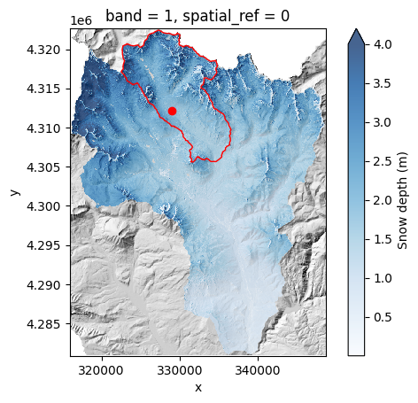
The red dot above shows Kettle Ponds. The red outline shows the “Upper” East River watershed. The snow depth map is for the whole East River watershed.
OK so we’ve been looking at a much larger area than we are used to. Let’s clip the DEMs/DSMs and zoom in on the Upper East River Valley and look again.
hillshade_clipped = hillshade.rio.clip_box(
*upper_east_river_polygon.geometry.iloc[0].bounds
)
snowdepth_clipped = snowdepth.rio.clip_box(
*upper_east_river_polygon.geometry.iloc[0].bounds
)
snowdepth_clipped.rio.bounds()
(322500.0, 4305550.0, 336550.0, 4322450.0)
Create zoom in areas for data extraction
from shapely.geometry import box
gothic_zoom_in_area = gpd.GeoDataFrame(geometry=[box(324000, 4.312e6, 328000, 4.318e6)])
copper_zoom_in_area = gpd.GeoDataFrame(geometry=[box(327500, 4.313e6, 331500, 4.320e6)])
fig, ax = plt.subplots()
hillshade_clipped.squeeze().plot(cmap='Greys_r', add_colorbar=False, ax=ax)
snowdepth_clipped.squeeze().plot(cmap='Blues', alpha=0.75, vmax=4, cbar_kwargs={'label': "Snow depth (m)"}, ax=ax)
plt.gca().set_aspect('equal') # so that the axes are sized correctly
kps_loc.plot(color='red', ax=ax)
upper_east_river_polygon.plot(edgecolor='red', facecolor='None', ax=ax)
gothic_zoom_in_area.plot(edgecolor='red', facecolor='None', ax=ax)
copper_zoom_in_area.plot(edgecolor='red', facecolor='None', ax=ax)
<Axes: title={'center': 'band = 1, spatial_ref = 0'}, xlabel='x coordinate of projection\n[metre]', ylabel='y coordinate of projection\n[metre]'>
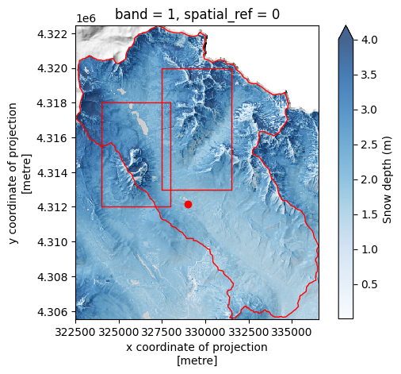
We now zoom in further into the two boxes above, the left one zooms in to Gothic Mountain, the right box zooms into a ridge north of Copper Creek. We also plot open up some “transects”, lines in the geospatial coordinate system, that we will extract snow depth values at.
Open up the “transect” lines that we will use to extract data from the rasters.
transects = gpd.read_file("../data/transects.geojson")
Let’s look at where the transects are on our map
fig, ax = plt.subplots()
hillshade_clipped.squeeze().plot(cmap='Greys_r', add_colorbar=False, ax=ax)
snowdepth_clipped.squeeze().plot(cmap='Blues', alpha=0.75, vmax=4, cbar_kwargs={'label': "Snow depth (m)"}, ax=ax)
plt.gca().set_aspect('equal') # so that the axes are sized correctly
kps_loc.plot(color='red', ax=ax)
upper_east_river_polygon.plot(edgecolor='red', facecolor='None', ax=ax)
gothic_zoom_in_area.plot(edgecolor='red', facecolor='None', ax=ax)
copper_zoom_in_area.plot(edgecolor='red', facecolor='None', ax=ax)
transects.plot(ax=ax, color='red')
# This adds annotations to label the transects by number
transects.apply(lambda x: ax.annotate(
text=x['id'],
xy=np.array(x.geometry.centroid.coords[0])+500,
ha='left',
size=12,
backgroundcolor='white',
color='red'), axis=1
)
plt.gca().set_aspect('equal') # so that the axes are sized correctly
plt.xlim(322500, 332500)
plt.ylim(4.312e6, 4.320e6)
(4312000.0, 4320000.0)
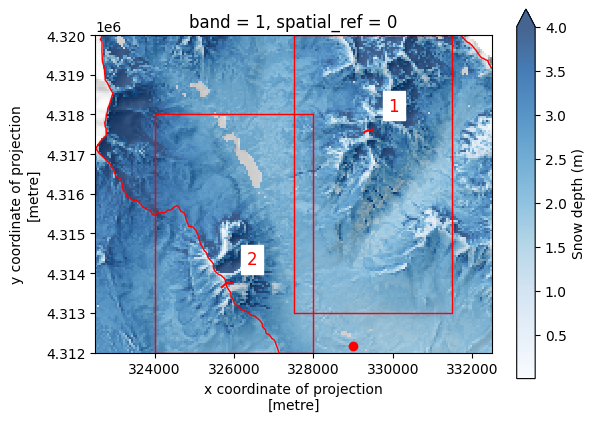
and zoom into the two boxes
fig, ax = plt.subplots()
hillshade_clipped.squeeze().plot(cmap='Greys_r', add_colorbar=False, ax=ax)
snowdepth_clipped.squeeze().plot(cmap='Blues', alpha=0.75, vmax=4, cbar_kwargs={'label': "Snow depth (m)"}, ax=ax)
plt.gca().set_aspect('equal') # so that the axes are sized correctly
kps_loc.plot(color='red', ax=ax)
upper_east_river_polygon.plot(edgecolor='red', facecolor='None', ax=ax)
transects.plot(ax=ax, color='red')
# This adds annotations to label the transects by number
transects.apply(lambda x: ax.annotate(
text=x['id'],
xy=np.array(x.geometry.centroid.coords[0])+500,
ha='left',
size=12,
backgroundcolor='white',
color='red'), axis=1
)
plt.gca().set_aspect('equal') # so that the axes are sized correctly
plt.ylim(4.312e6, 4.318e6)
plt.xlim(324000, 328000)
(324000.0, 328000.0)
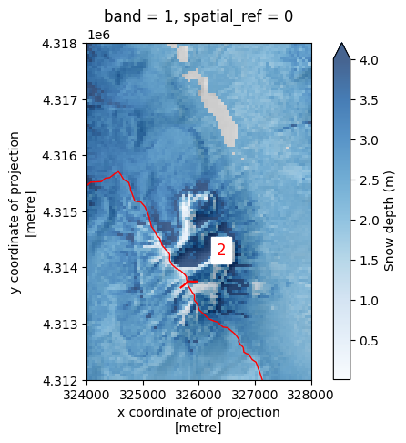
We can see that a large amount of snow has settled on the east side of Gothic mountain, particularly in a rounded couloir
Let’s zoom into the ridge north of Copper Creek. We also add a transect here
fig, ax = plt.subplots()
hillshade_clipped.squeeze().plot(cmap='Greys_r', add_colorbar=False, ax=ax)
snowdepth_clipped.squeeze().plot(cmap='Blues', alpha=0.75, vmax=4, cbar_kwargs={'label': "Snow depth (m)"}, ax=ax)
plt.gca().set_aspect('equal') # so that the axes are sized correctly
kps_loc.plot(color='red', ax=ax)
upper_east_river_polygon.plot(edgecolor='red', facecolor='None', ax=ax)
transects.plot(ax=ax, color='red')
# This adds annotations to label the transects by number
transects.apply(lambda x: ax.annotate(
text=x['id'],
xy=np.array(x.geometry.centroid.coords[0])+500,
ha='left',
size=12,
backgroundcolor='white',
color='red'), axis=1
)
plt.gca().set_aspect('equal') # so that the axes are sized correctly
plt.ylim(4.313e6, 4.320e6)
plt.xlim(327500, 331500)
(327500.0, 331500.0)
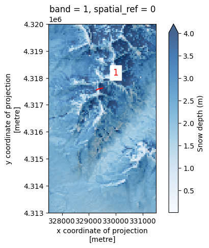
It’s apparent in both images, that more snow settles on the east side of ridges than on the left!
We can quantify this by extracting snowdepth at each point in the transects. Using the points, we will extract elevation and snow depth values, and plot profiles of the elevation and the snow depth on top of that elevation, to see how snowdepth varies across two ridges.
# create a raster/dataset that is elevation + snow depth!
elev_plus_snowdepth = elevation + snowdepth
# extract transect 1 elevation values
# as well as "elevation" plus snow depth" values along each point in that transect.
transect1_elevation_values = np.array([
elevation.sel(
x=coord[0],
y=coord[1],
method='nearest'
).values.item() for coord in transects.geometry[0].coords
])
transect1_snowdepth_values = np.array([
elev_plus_snowdepth.sel(
x=coord[0],
y=coord[1],
method='nearest'
).values.item() for coord in transects.geometry[0].coords
])
resolution = transects.geometry[0].length / 50
transect1_xdistance_values = np.arange(0, len(transects.geometry[0].coords)) * resolution
# extract transect 2 elevation values
# as well as "elevation" plus snow depth" values along each point in that transect.
transect2_elevation_values = np.array([
elevation.sel(
x=coord[0],
y=coord[1],
method='nearest'
).values.item() for coord in transects.geometry[1].coords
])
transect2_snowdepth_values = np.array([
elev_plus_snowdepth.sel(
x=coord[0],
y=coord[1],
method='nearest'
).values.item() for coord in transects.geometry[1].coords
])
resolution = transects.geometry[1].length / 50
transect2_xdistance_values = np.arange(0, len(transects.geometry[1].coords)) * resolution
fig, axes = plt.subplots(1, 2, figsize=(6,3))
axes[0].plot(
transect1_xdistance_values,
transect1_snowdepth_values,
label='Elevation + snow depth'
)
axes[0].plot(
transect1_xdistance_values,
transect1_elevation_values,
label='Elevation'
)
axes[0].legend(fontsize=6)
axes[1].plot(
transect2_xdistance_values,
transect2_snowdepth_values,
label='Elevation + snow depth'
)
axes[1].plot(
transect2_xdistance_values,
transect2_elevation_values,
label='Elevation'
)
axes[1].legend(fontsize=6)
<matplotlib.legend.Legend at 0x7f658dd34110>
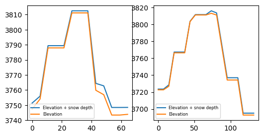
So, we can see that, even though the elevation and snowdepth datasets are quite coarse, there is more snow on the westerly side of the ridges than on the easterly sides.
Below we calculate the mean value on either side of the ridge for transect 1:
# the 9 index here is just the position in the list where we want to split the transect profile values
west_side_xdistance = transect2_xdistance_values[:9]
east_side_xdistance = transect2_xdistance_values[9:]
east_side_mean_snowdepth = (transect2_snowdepth_values[:9] - transect2_elevation_values[:9]).mean()
west_side_mean_snowdepth = (transect2_snowdepth_values[9:] - transect2_elevation_values[9:]).mean()
east_side_mean_snowdepth, west_side_mean_snowdepth
(np.float64(0.8138020833333334), np.float64(2.3519775390625))
And now for transect 2:
west_side_xdistance = transect1_xdistance_values[:7] # the 7 here is just the position in the list of where we want to split the transect profile values
east_side_xdistance = transect1_xdistance_values[7:]
west_side_xdistance, east_side_xdistance
east_side_mean_snowdepth = (transect1_snowdepth_values[:7] - transect1_elevation_values[:7]).mean()
west_side_mean_snowdepth = (transect1_snowdepth_values[7:] - transect1_elevation_values[7:]).mean()
east_side_mean_snowdepth, west_side_mean_snowdepth
(np.float64(1.8778948102678572), np.float64(4.412760416666667))
So for transect 1, the snowdepth was, on average, 81cm cm on the east side of the ridge and 235cm on the west side of the ridge! For transect 2, 188 cm on the east and 4.41cm on the west.